Desde lo más alto de las montañas nacen pequeños arroyos, que poco a poco se convierten en grandes ríos y desembocan en lagos, lagunas y en el mar.Gran cantidad de plantas y animales, grandes y pequeños, viven dentro del agua, y en sus orillas. Los grandes árboles protegen al río de los cambios de temperatura y muchas especies se reúnen a disfrutar del clima creado por el agua.
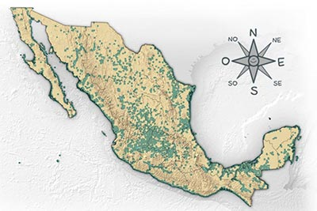
Clarín o jilguero
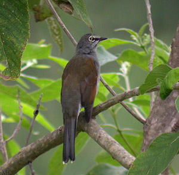
Me llamo clarín, pero también me llaman zorzal o jilguero. Vivo en los bosques cercanos a arroyos, ríos y lagos. Como todos mis parientes, nos encanta el canto y somos excelentes tenores. Me alimento de pequeños insectos y de delicadas frutitas.
Ahuejote
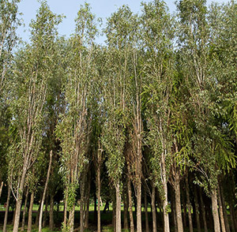
Soy un árbol muy esbelto que crece a la orilla de los ríos. Soy pariente de los sauces. Mis hojas son delgadas. Algunos árboles tenemos flores masculinas y otros, tenemos flores femeninas. En la antigüedad me sembraban a la orilla de las chinampas, para que no se derrumbaran. Aun me puedes visitar en Xochimilco. Tenemos propiedades medicinales y a partir de nuestra corteza se inventaron las aspirinas.
Mirlo Acuático
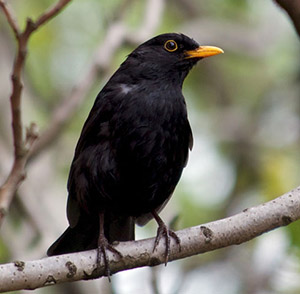
Vivo cerca de los ríos y arroyos de las montañas ya que me alimento de insectos que viven en el agua. Brinco de roca en roca y me zambullo en el agua fría para atrapar a los insectos buceando. Mis plumas están cubiertas de grasa y me protegen del frío como si trajera un traje de buzo.
Chuspata
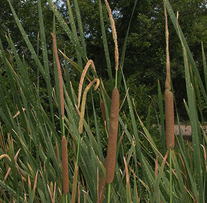
Soy una planta acuática que crezco abundantemente a la orilla de los lagos. Entre mis largas hojas las aves esconden sus nidos. Mis alargadas flores parecen salchichas ensartadas. Muchas culturas me han utilizado para hacer petates, canastas y sombreros.
Carpa
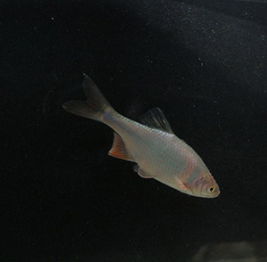
Soy una carpa ¡pero no de circo! Pertenezco a una de las grandes familias de peces de agua dulce. Muchos de mis parientes son endémicos de un río o de un lago, es decir, solamente viven ahí y en ningún otro lugar del mundo! Me alimento de pequeños animalitos pero siempre estoy cuidándome de voraces depredadores aéreos y acuáticos, y de uno que otro anzuelo.
Tortuga Blanca
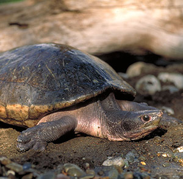
A diferencia de muchos parientes yo soy vegetariana. Me alimento de tallos, hojas, flores y frutos de las plantas acuáticas y también de las hojas de los árboles que caen al agua. Mis parientes cercanos se extinguieron junto con los dinosaurios y ahora soy la única sobreviviente de la familia. Comparada con otras pequeñuelas soy bastante grandecita. Puedo medir hasta 60 cm de largo y pesar hasta 22 kilos.
Ninfa o nenufar
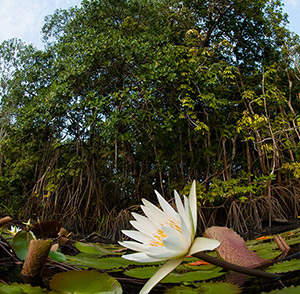
Soy la ninfa blanca. También me llaman “apapatla”, que significa en náhuatl “flor de hierba de agua”. Soy una planta acuática con bellísimas flores que abren durante el día y cierran por la noche. A las ranas les encanta descansar sombre mis amplias hojas que flotan sobre el agua.
Pato Pijije
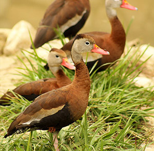
Somos los pijijes de alas blancas. Somos patos esbeltos y muy elegantes. Vivimos cerca de lagos y lagunas. Nos alimentamos de semillas, caracoles y pequeños insectos. Nos gusta flotar en el agua ya que ahí nos sentimos más seguros. Hay menos peligros que en la tierra y conseguimos comida fácilmente con solo meter la cabeza al agua. Además, escondemos nuestros nidos en huecos de árboles.
Camarón de Río
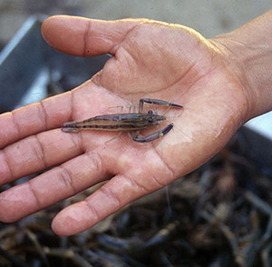
Somos camarones de río, pero también nos conocen como langostinos o chacales. Nos gusta el agua bien limpia, y nos alimentamos de plantas y animales minúsculos. Nos escondemos en el fondo del río bajo las piedras para que no nos encuentren las voraces nutrias. ¿Verdad? – Sí, -Sí, Sí.
Charales
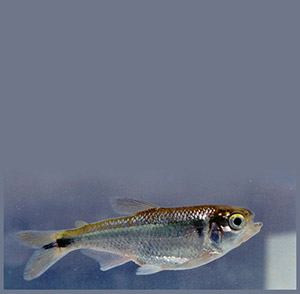
Somos peces pequeñitos de color plateado de los grandes lagos. Nos gusta pasearnos acompañados, ya que así, nos cuidamos unos a otros de los peces grandes, de garzas y de martines pescadores. Nos alimentamos de animales minúsculos que viven en el agua y nos escondemos entre las plantas de nuestros depredadores.
Rana Verde
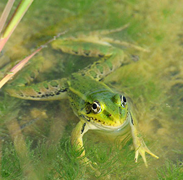
Soy la delgada rana verde. Nado cuidadosamente bajo el agua y de vez en cuando salgo a la superficie asomando mis grandes ojos. Cuando una sabrosa libélula se distrae, de un largo lengüetazo ¡la pesco y me la engullo! Una vez que tengo la barriga llena, me subo a las hojas de una ninfa a descansar.
Ajolote Mexicano
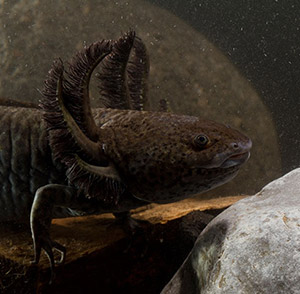
Soy un anfibio del grupo de las salamandras, pero a diferencia de ellas, nosotros permanecemos toda la vida en el agua. Ahí respiramos usando unas branquias que parecen una gran melena. Nos alimentamos de pequeños insectos y pequeñas lombrices. Si nos dan una mordida en la cola o en una pata, podemos regenerarla de nuevo. ¿No es asombroso?
Castor
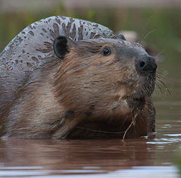
Soy el tremendo castor. Con mis gigantescos dientes incisivos, que me crecen toda la vida, puedo cortar altos álamos y construir grandes presas y madrigueras en medio de los lagos. Cuando percibo peligro, me hecho un clavado y doy un fuerte coletazo al agua para hacer ruido y avisarle a los distraídos.
Ahuehuete
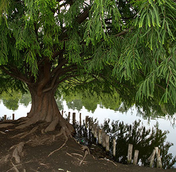
Soy un frondoso árbol pariente de pinos y cedros. Mi nombre quiere decir “el viejo del agua”, porque me encanta crecer a la orilla de ríos y lagos. De hecho, con mis hermanos formamos bosques ribereños a lo largo de los ríos. Y lo de “viejo”… pues si, somos árboles centenarios. Uno de nuestros tatarabuelitos sigue vivo con más de 2000 años.